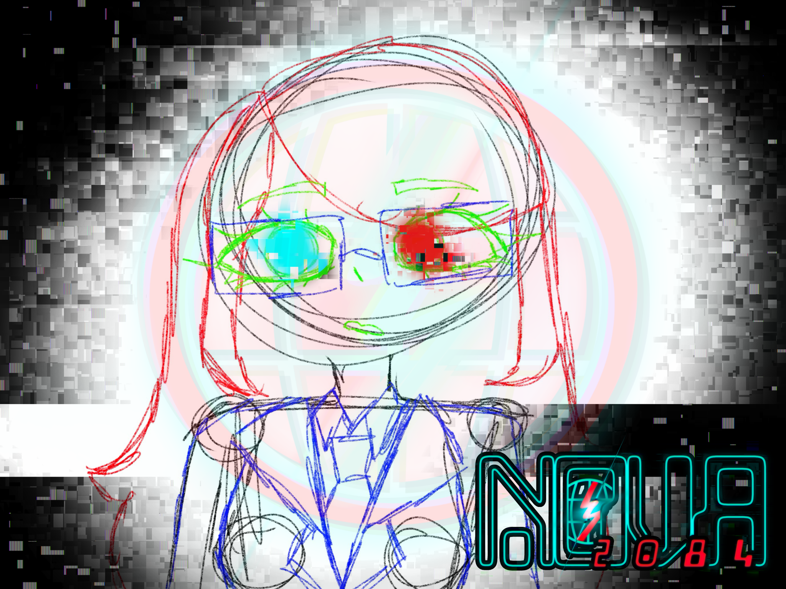

NOVA 2084 Info
NOVA 2084 is an ambitious, adult dystopian sci-fi animated series in current development by a group of young adults.
Inspired by the dystopian novel, 1984 by George Orwell as well as various other pieces of dystopian fiction & modern conspiracies, Novaur & StellarSky (the creators of NOVA 2084) are passionately determined to create this ambitious indie animated series! NOVA 2084 will not only make you question the state of technology, authority, and what is real, but wonder about the quiet, dark truths no one wants to talk about.
As of now, NOVA 2084 is currently in development. Stay tuned for future updates!
Now shhhhh.... Careful. *She's* overseeing you...